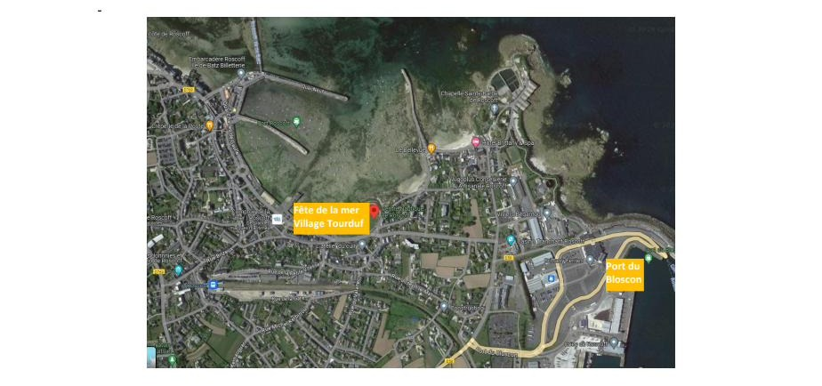
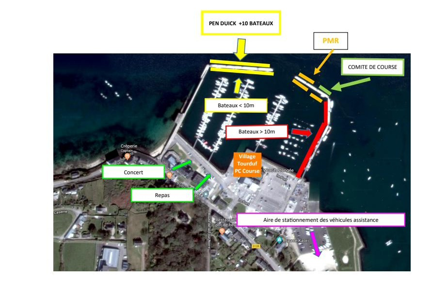
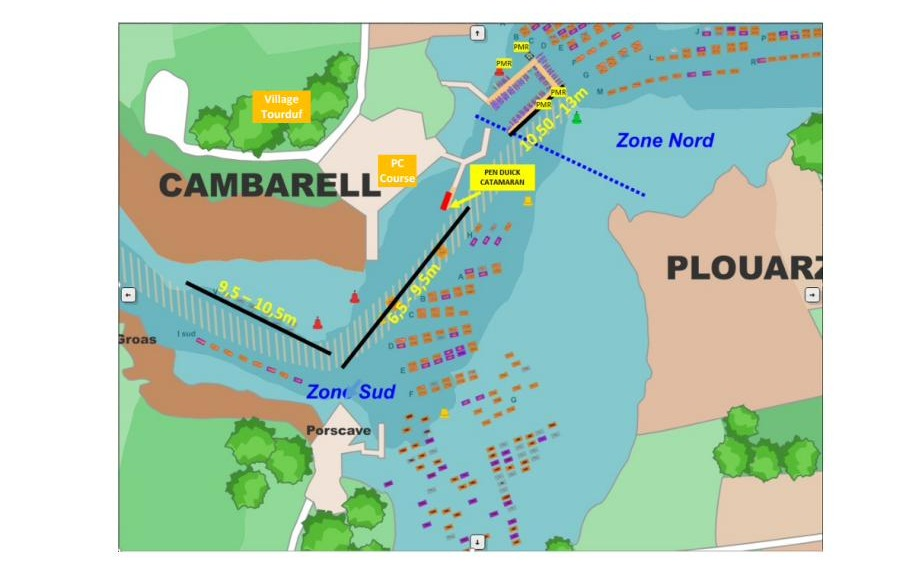
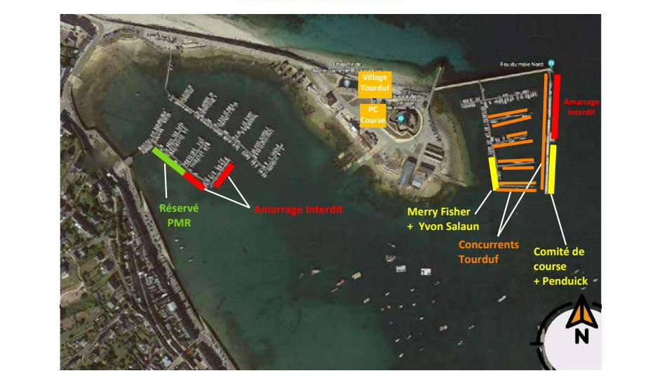
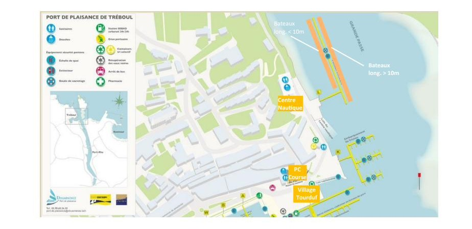
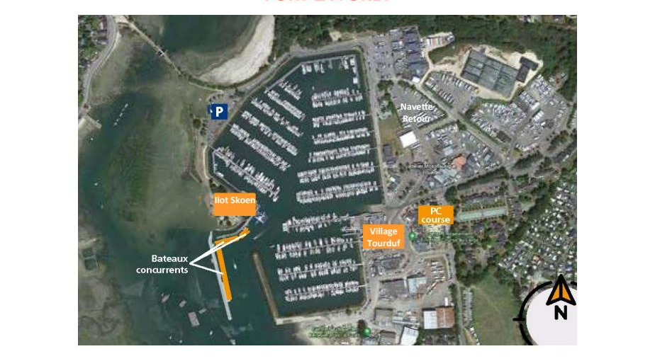

Informations pratiques et festivités de chaque escale du Tour du Finistère à la Voile 2026. Source exclusive : Roadbook officiel CDV29.
Samedi 25 et dimanche 26 juillet
Prudence. Pour accéder au port du Bloscon, vous traverserez un chenal prioritaire pour ferries, cargos et navires de commerce.
VHF du bureau de commerce : canal 12.
Confirmations des inscriptions, Maison de la plaisance, Port du Bloscon : samedi 25 juillet 14h00-18h00, dimanche 26 juillet 09h00-18h00.
Transport des voiles de convoyage — HAKA Voile propose un service de transport de Roscoff à Port la Forêt. Déposer vos voiles à la maison de la plaisance le dimanche 26 juillet entre 14h00 et 18h00.
Samedi 25 : 11h00-18h00 Fête de la mer sur le vieux port.
Dimanche 26 : 11h00-18h00 Fête de la mer sur le vieux port et puces de mer au port du Bloscon · 18h30 Cérémonie d'ouverture, briefing coureurs au Centre Nautique de Roscoff · 19h00 Pot d'accueil.
Le Centre Nautique de Roscoff est à 15 minutes à pied du port du Bloscon. Navettes gratuites entre le port du Bloscon et le vieux port (toutes les 15 minutes).

Lundi 27 juillet
Les bateaux d'une longueur inférieure à 10 m seront positionnés à tribord en entrant dans le port ; ceux de plus de 10 m seront à bâbord.
Attention : zone dangereuse à l'entrée du port, soyez vigilant au balisage !
Le PC Course sera installé dans le Yacht Club de l'Aber Wrac'h.
Le Village du Tourduf sera ouvert à partir de 15h00 devant le Yacht Club de l'Aber Wrac'h.
La proclamation des résultats du jour se fera vers 18h30 sur le village du Tourduf.
Le repas des équipages avec concert se déroulera à partir de 19h30 sur le port de l'Aber Wrac'h.

Mardi 28 juillet
Les bateaux d'une longueur inférieure ou égale à 10,5 m seront positionnés à couple sur les lignes de mouillage à l'entrée du port.
Les bateaux de plus de 10,5 m seront positionnés à couple sur le ponton visiteur.
Le PC Course sera installé dans le local CCPI sur le port.
Le village du Tourduf ouvrira à partir de 15h00 dans le champ au-dessus du port de plaisance.
La proclamation des résultats du jour se fera vers 18h30 sur le village du Tourduf. Un pot d'accueil sera servi à l'issue de la remise des prix.
Un repas des équipages avec concert est organisé à partir de 19h30 près de la scène au-dessus du port.

Mercredi 29 juillet
Tous les bateaux concurrents seront positionnés dans le bassin Vauban (emplacements orange).
Des emplacements PMR (en vert) seront réservés au port Notic : attention, tirant d'eau < 2 m !
Le PC Course est situé dans la cabane noire à côté de la Tour Vauban.
Le Village du Tourduf ouvrira à partir de 15h00 sur le sillon près de la Tour Vauban.
La proclamation des résultats du jour se fera vers 18h30 devant le podium sur le village du Tourduf. Un pot d'accueil sera servi à l'issue de la remise des prix.

Jeudi 30 et vendredi 31 juillet
Les bateaux de moins de 10 m de long sont séparés de ceux de plus de 10 m sur le ponton visiteur.
Le PC Course est situé dans la Maison du Nautisme.
Sanitaires et douches disponibles à la Maison du Nautisme, et au Centre Nautique (de 17h40 à 19h30 le jeudi).
Jeudi 30 : Village du Tourduf ouvert à partir de 15h00 · proclamation des résultats du jour vers 18h30 sur le village · repas des équipages avec concert à partir de 19h30 à la Salle Jules Verne (15 minutes à pied).
Vendredi 31 : Ouverture du village du Tourduf à partir de 09h00 · démonstration d'hélitreuillage à 10h00 devant le village.

Samedi 1er août
Le PC Course sera situé dans les locaux de Finistère Mer Vent.
Restitution des cagnards et pavillons à l'issue de la course de nuit, de 10h00 à 12h00, sous le kiosque de l'Ilot Skoen.
Les voiles de convoyage seront à récupérer à la Capitainerie du port de plaisance.
Navette retour (Port la Forêt – Morlaix) stationnée sur le parking de l'aire de carénage. Départ prévu à 15h00.
Petit déjeuner offert aux concurrents à l'issue de l'arrivée de la course de nuit, de 07h00 à 10h00, sous le kiosque de l'Ilot Skoen (près du ponton concurrents).
Le Village du Tourduf ouvrira à partir de 09h00 sur le terre-plein central du port de plaisance.
La remise des Prix du Tour du Finistère à la Voile 2026 se déroulera à partir de 13h00 sur le village du Tourduf.
